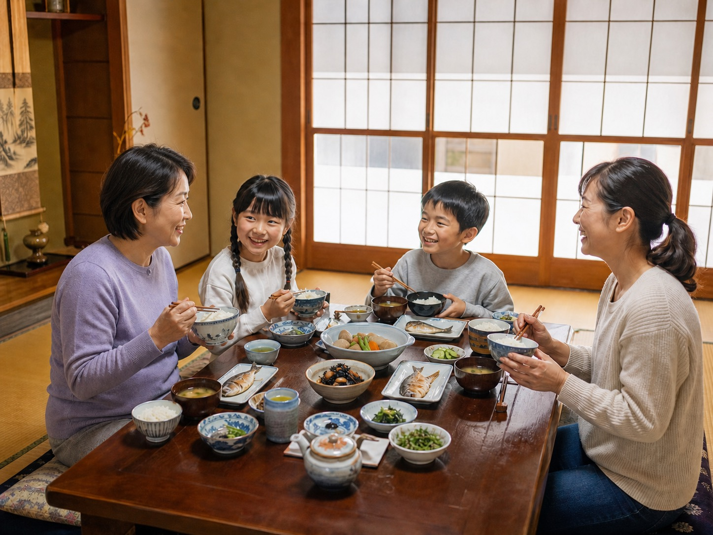
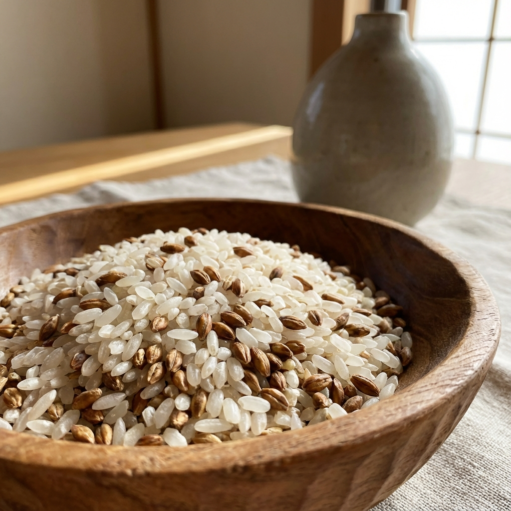
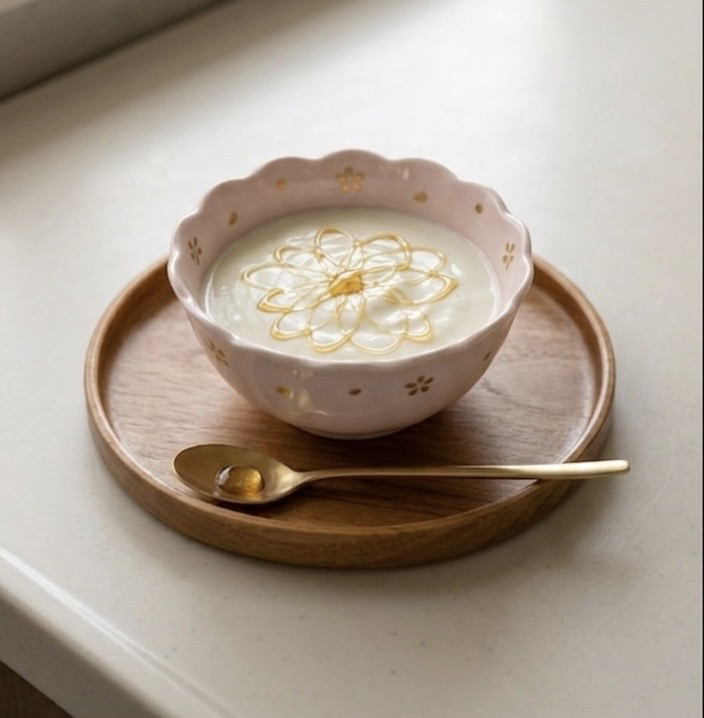
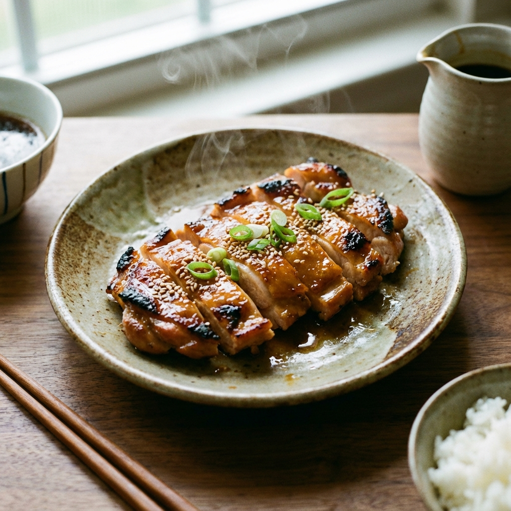
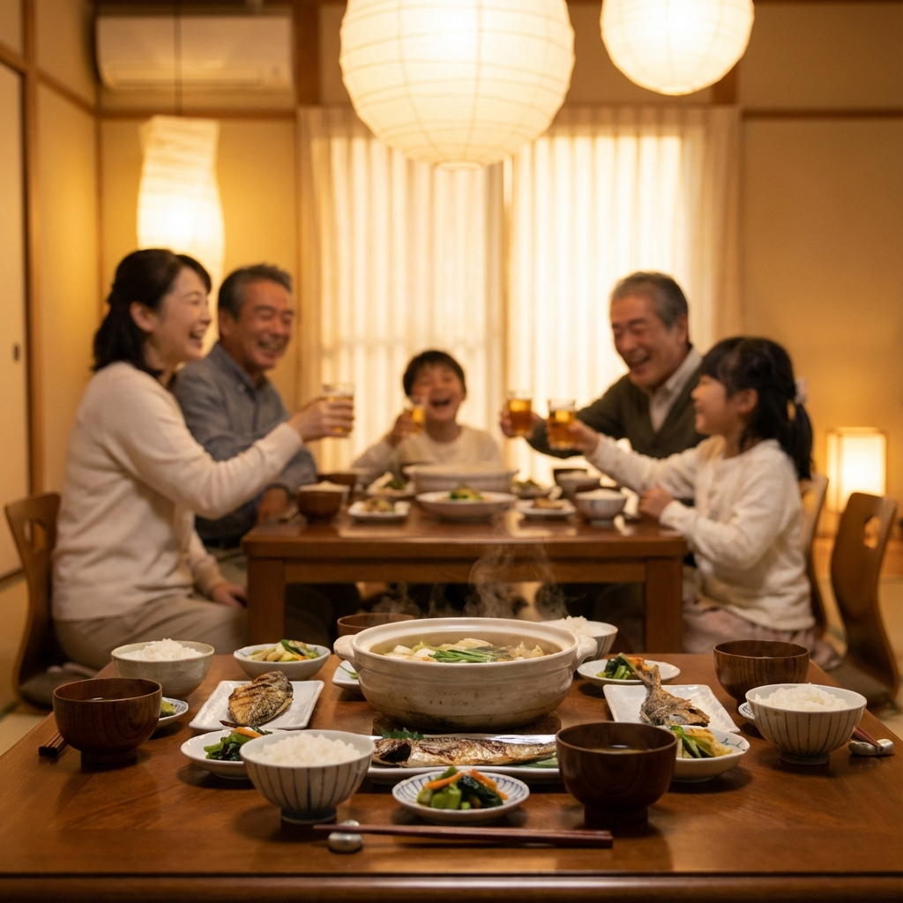
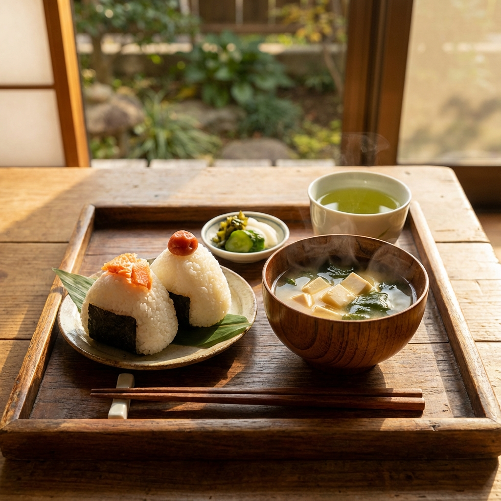
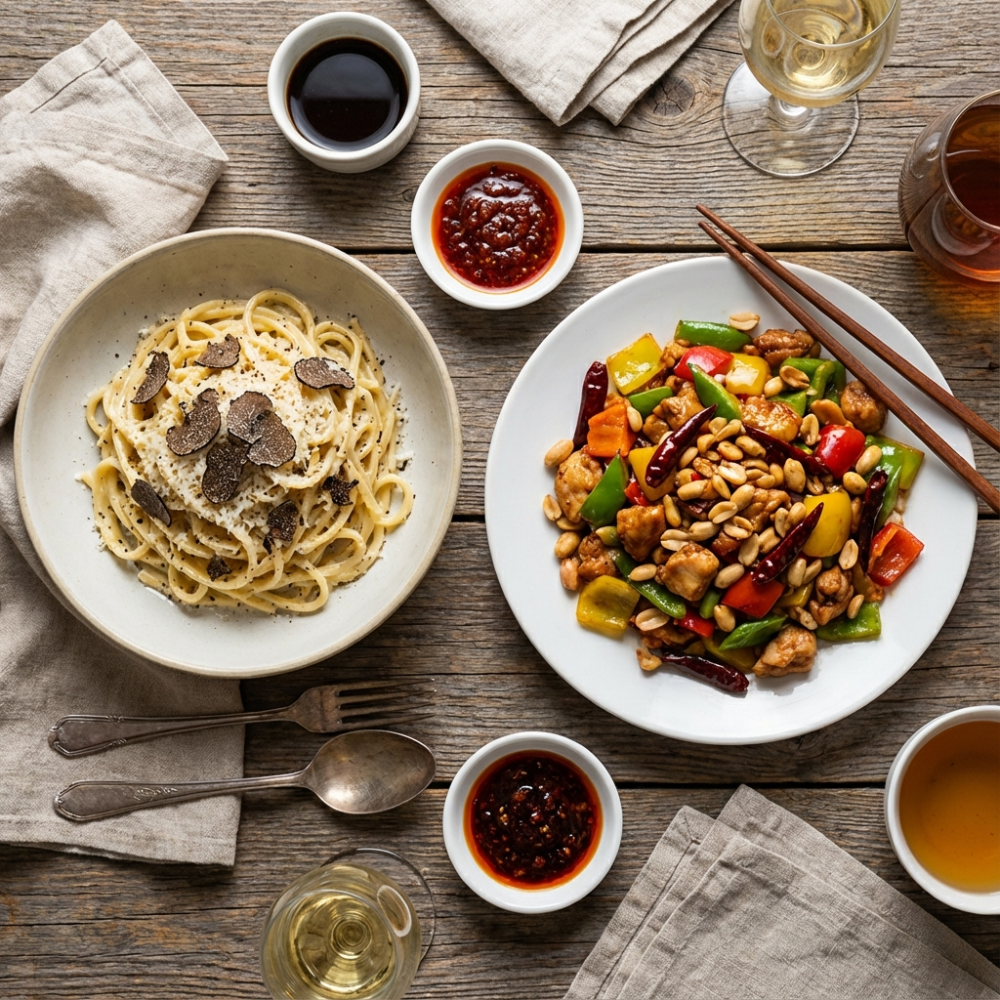
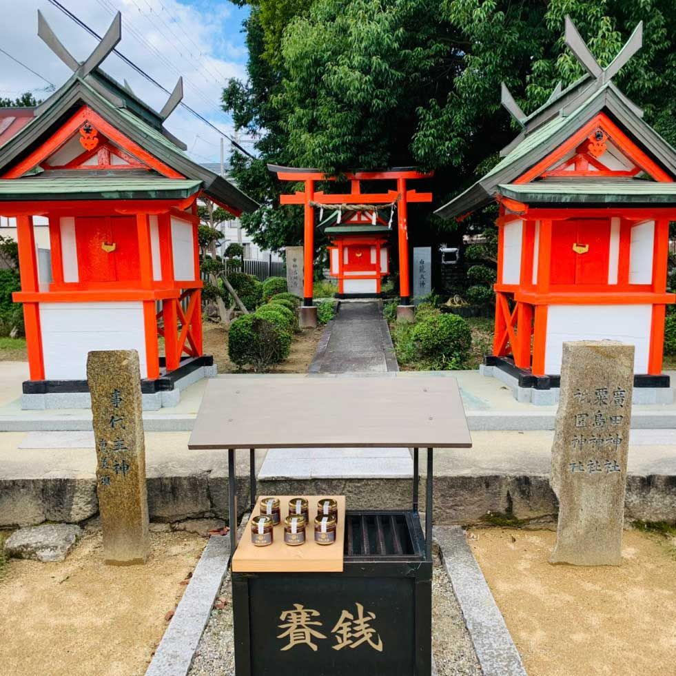
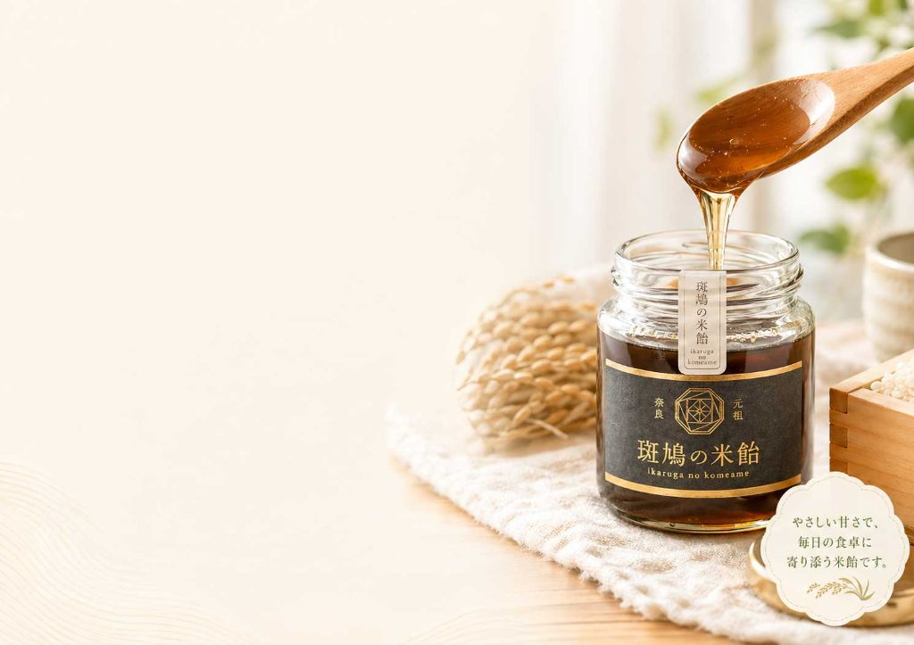

日本で昔から使われてきた「水飴／米飴」。
それは、「お米」と「麦芽」から作る、穀物由来の甘味料です。
砂糖が貴重だった時代から続く甘味料
まだ砂糖が高価で貴重だった時代、日本人はお米などの穀物から甘味を作り出していました。 それが「水飴」や「米飴」です。
お米や麦を糖化して作るこの伝統的な甘味料は、 そのまま舐めるだけでなく、和菓子や飴細工、料理の照り出しなど、 様々な場面で人々の暮らしを支えてきました。

米・麦芽などの穀物から糖化して作る甘味料全般を指します。 工業的に大量生産されるものも多くあります。
「昔ながらの知恵」と「今の暮らし」に橋をかける存在です。
風味・使い方・イメージの差
とろりとした琥珀色の液体で、はちみつや水飴に近い質感です。
砂糖のような強いキレのある甘さではなく、穀物を思わせるやわらかな甘さです。後味は比較的すっきりとしていて、ベタっと残りにくいのが特徴です。
粉状で量りやすく、どんな料理にも万能なベース甘味。
液体なので、「照り」「つや」「コク」を出したい料理と相性が良いです。
デザートやおやつのトッピング（ヨーグルト・アイス・パンケーキ）にも使いやすいです。
「全部を置き換える」よりも、
「最後に加える甘さ」「コクを足したい時」の一部を米飴にする使い方が向いています。

成分表示にカタカナの添加物が並ばない安心感があります。「お米と麦芽から作られた甘味料」と、子どもにも説明しやすいシンプルさ。家に置いておきたい"ストック食材"としても心理的なハードルが低いのが特徴です。

甘いものをゼロにはできませんが、「どういう甘さを選ぶか」は変えられます。「市販のおやつだけ」から、ヨーグルトや手作りパンケーキに米飴を添えるなど、家でコントロールできる甘さの比率を増やせます。「罪悪感を減らしたい」という気持ちに寄り添う選択肢です。

煮物や照り焼きの仕上げに加えると「テリ・ツヤ」が出ます。甘さだけでなく、見た目の満足感が上がり、「同じ材料でもちょっと特別に感じる」仕上がりに。手間を増やさずに「ひと手間かけた感」が演出できます。

大人の料理・子どものおやつ・祖父母の煮物など、メニューを問わず活用できます。「家族みんなが使える1本」としてキッチンに置きやすく、誰か1人だけの健康志向ではなく、家族全体の選択として自然に取り入れられます。

多糖類（複合炭水化物）を多く含むため、砂糖に比べて消化吸収が穏やかです。血糖値の急激な乱高下を抑え、穏やかなエネルギー供給が続きます。朝食や子どものおやつに取り入れると、集中力の持続や腹持ちの良さにつながります。

「和風の調味料」と思われがちですが、実は万能です。トマトソースの酸味をまろやかにしたり、ドレッシングのつなぎに使ったり、中華の照り出しに使ったり。ハチミツやメープルシロップのようなクセがないため、素材の味を邪魔せず、ジャンルを問わず隠し味として活躍します。
今日からできる"ひとさじチェンジ"アイデア
いきなり砂糖を全て米飴にする必要はありません。
から、砂糖の一部を米飴に変えてみてください。
率直なQ&A
本製品は食品であり、特定の疾病の予防・治療を目的としたものではありません。「健康にいい／悪い」を断言するのではなく、原材料がシンプルであること、使い方を自分でコントロールしやすいという観点で選んでいただければと思います。
無理に全てを置き換える必要はありません。普段使っている砂糖をベースにしつつ、「砂糖の一部を米飴に変える」くらいから始めるのが現実的です。「続けられる使い方」を優先してください。
一般的に甘味料である以上、摂り過ぎればカロリーはかさみます。「砂糖の代わりだからたくさんかけていい」というものではありません。あくまで「甘さの選択肢を増やす」ためのもの、としてご理解ください。
お米と麦芽を主原料とした食品ですので、基本的には問題ありません。ただし年齢・体質に差があるため、少量から様子を見ながらお使いください。不安な場合はかかりつけの専門家にご相談ください。
他の米飴との違い
斑鳩の田んぼで育てた米と、国産麦芽を使用。「顔が見える素材」で作っています。
糖化から煮詰めまで、時間と労力をかけて。季節や湿度による調整も、機械任せではなく人の手で行っています。

— 祈りを込めて
斑鳩の米飴は、製造が終わったあと、すぐに出荷するのではありません。
地元・斑鳩の神社に参拝し、お米と米飴を奉納してから、お客様のもとへ届けています。
「大切な人に届けるものだから、心を込めて。」
そんな想いが、この小さな習慣に込められています。
神社の賽銭箱の前に、その回の米飴を並べて参拝するのが、私たちの出荷前の習慣です。

米飴とは、穀物由来の、昔から使われてきた甘味料。
砂糖とは、味も、質感も、使い方も、そして「選び方のストーリー」も違います。
「甘いものをやめるのではなく、選び方を変える。
その選択肢のひとつとして、斑鳩の米飴を手に取ってみませんか？」